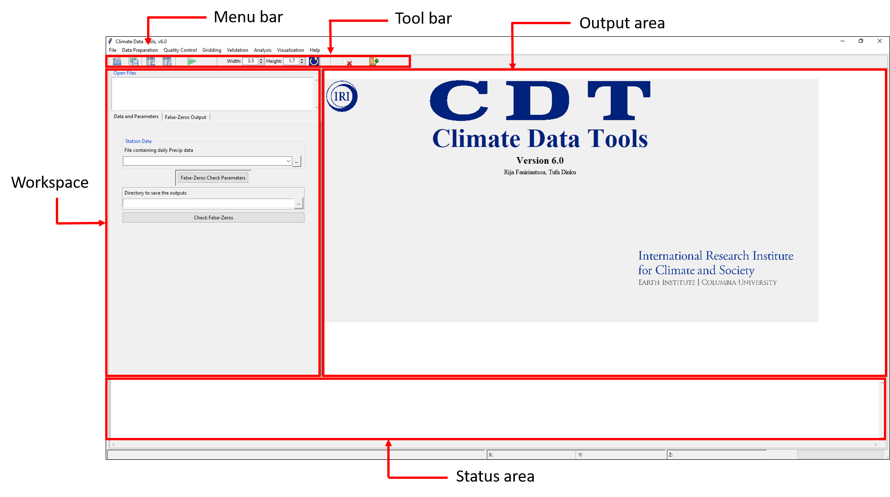
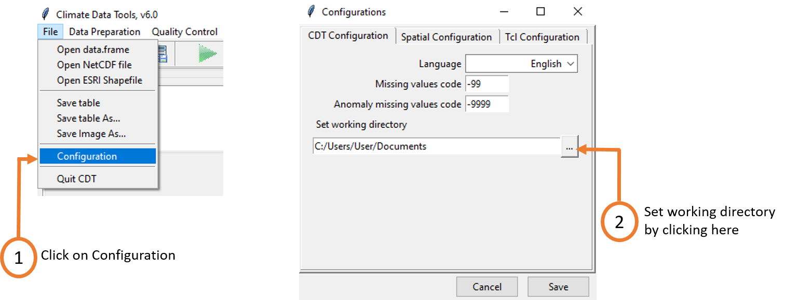

Chapter 1 Introduction to CDT
1.1 Introduction
Climate services can help in ex-ante decision making in climate-sensitive sectors such as agriculture, health, early warning system, water management etc. Use of climate data and hence the availability and generation of it are prerequisites to ensure climate services for different sectors. Availability of and access to high quality climate data itself is a challenge in Africa due to a limited number of weather stations and the declining number of this over time. A number of reasons such as national data policies, lack of finance and dissemination tools make the access to climate data challenging and expensive. To address this issue, the International Research Institute for Climate and Society (IRI) at Columbia University is leading The Enhancing National Climate Services (ENACTS) initiative whereby it is working with different National Meteorological Services (NMS) in Africa and in other developing countries to develop high resolution, quality controlled climate data accessible to the users. Generation of high quality resolution data can be done by first quality control the data and then merging the observation or station data with satellite data. Doing these require access to a tool that offers all of these functionalities along with minimum, or even zero cost associated with it. Keeping this in mind, IRI developed Climate Data Tool (CDT), an open-source R-based software that comes with intuitive and user friendly graphical user interface (GUI). CDT offers many basic functionalities such as organizing data, validating data, analyzing data besides quality control and data merging. This book describes all of these basic functionalities and how to use these in CDT.
Climate variability and changing climate play a crucial role in the socio-economic development and well-being of people. According to the AR5 Synthesis report by IPCC (IPCC, 2014), development gains could be impeded or undone by climate change through extreme climate events, suitability zones shifting for crops and disease and sea-level rise. These changes can prove to be very damaging for many different sectors such as water resources, forestry, energy, health, tourism, transportation and agriculture, in particular, as rain-fed land is about eighty percent of the total cultivable land (UNESCO, 2009). In this backdrop, effective use of climate information can play a pivotal role in addressing the risks by informing the agricultural practitioners at different levels. This can help them in making agriculture more resilient to erratic climatic patterns by making decisions according to this information such as when to cut the harvest or when to plant.
Effective use of climate information requires it to be useful, usable and to be used in helping climate sensitive decision making and management. In this regard, climate services is defined by the Climate Services Partnership (2021) as “production, translation, transfer, and use of climate knowledge and information in climate-informed decision making and climate-smart policy and planning, …”. Thus, generation of climate data is not itself sufficient, rather it should be immediately accompanied with translation of the climate knowledge into information relevant to a sector such as agriculture. Although researchers and meteorological agencies are working on producing information according to users’ need, there still might be significant hindrance preventing potentially “useful” information from becoming “usable” (McNie, 2013; Vincent et al., 2018). One of the bottlenecks is associated with how relevant the information is which is further compounded by the problems with the data itself including the spatial scale of the data, the quality of it, and in some cases, even the presence of it.
In most of the African countries, there has been inadequate collection of climate data and even when it is available, there is poor access to it (Dinku, 2019). In case of its availability, it suffers from having poor or inconsistent quality making it difficult to be used for decision-making at different levels to adapt to changing and varying climate. The Enhancing National Climate Services (ENACTS) initiative by the International Research Institute for Climate and Society (IRI), Columbia University, has been working to address such gaps in data quantity and quality, in addition to ensuring access to and use of climate information products in different countries by working closely with National Meteorological Services (NMS) in many countries in Africa and beyond. (Dinku et al., 2018). NMS being the primary provider of weather and climate information, and warnings of any damaging climatic events, it is paramount that they have no limitations in data. The ENACTS approach exactly works in this space by working with NMS in Africa and other developing countries on data quality and availability issues. In doing so, quality-controlled data from met NMS are combined with either satellite estimates for rainfall or reanalysis products for temperature (Dinku et al., 2018; Dinku et al., 2013). This merging process involves many tasks including the organization of station and proxy data, quality control of the station and proxy data, merging quality-controlled station data with proxies, evaluation of the combined data, and further analysis and visualization of station and combined data.
Many NMS, however, don’t have access to easy-to-use and freely available tool for performing such tasks. To address such cases, the Climate Data Tool (CDT), an R-based software package with an easy-to-use graphical user interface (GUI) was developed in-house by the IRI. CDT can be run in multiple operating systems such as Windows and Linux. CDT went through five years of evolution during which iterative feedback from NMS around Africa further helped it to become more powerful, dynamic intuitive, and user-friendly tool. Further, CDT can also be run at script level if a user requires more flexibility.
CDT is now being used by different met agencies around the world for conducting the quality control of station data, generating merged data by merging station data with satellite or reanalysis data, conducting different climate data validation, analyses and visualizations. The features available in CDT can prove to be very helpful for researchers working in climate, hydrology, geography and other domains who have to work with climate data for doing their analyses.
This book contains snapshots of different options available with hands-on practice with some fake or some pseudo data. Using a set of different datasets we will show how a user can utilize these options.
CDT broadly offers the following functionalities:
• Preparing station and proxy data; • Assessing data availability; • Quality control of data; • Blending or merging observation or station data with proxies; • Validation of data; • Analysis of data; and • Visualization of data.
1.2 Installation of CDT
1.2.1 CDT installation on Windows
1.2.1.1 Install R
Go to the CRAN website CRAN. Then click on the link Download R for Windows and base. Download the latest version of R. For example: Download R 3.6.2 for Windows (85 megabytes, 32/64 bit). Install the downloaded file (example: R-3.6.2-win.exe). Perform a default installation (Just click on Next).
1.2.1.2 Install Rtools
Go to the CRAN website CRAN. Then click on the link Download R for Windows and Rtools. Download the recommended version of Rtools. Install the downloaded file. Follow the installation instructions on Rtools.
1.2.1.3 Install CDT
Open R and install devtools package with:
install.packages("devtools")
Now, you can install the the development version of CDT from GitHub with:
library(devtools)
install_github("rijaf-iri/CDT")
1.2.2 CDT installation on MacOS X
1.2.2.1 Install XQuartz
Type XQuartz in Apple’s search, if you don’t find it, it means XQuartz is not already installed. It’s better to update XQuartz to the latest version if it is already installed. Download and install it from https://www.xquartz.org. Restart your computer.
1.2.2.2 Install Tcl/Tk
Check Tcl/Tk installation
Check if the Tcl/Tk libraries are already installed in your computer. Open a terminal and run the following command:
echo 'puts $tcl_library;exit 0' | tclsh
If Tcl/Tk libraries are installed in your computer, you should get the path to the Tcl library like this: /usr/local/lib/tcl8.6.
If Tcl/Tk libraries are not yet installed in your computer, you can install ActiveTcl®. Go directly to the ActiveTcl® installation below.
Check Tktable package
Check if the package Tktable is installed. Run the following command from terminal:
echo 'puts [package require Tktable];exit 0' | tclsh
If the package is installed, you should have the version number of the package. If Tktable is not installed, you can download it from here.
Change to the directory where you downloaded the Tktable archive file.
cd ~/path/to/Tktable/archive
Uncompressed the archive file.
tar -zxvf Tktable2.10.tar.gz
This will create a subdirectory Tktable2.10 with all the files in it. Change to this directory.
cd Tktable2.10
The default installation path of Tktable is under /usr/local. If the Tcl Library Path directory is under this directory, you can install Tktable by default using the following commands:
./configure
make install
If Tcl Library Path directory is anywhere else. Check the auto_path global variable using the following command
echo 'puts $auto_path;exit 0' | tclsh
You should have a list of directories like this: /usr/local/lib/tcl8.6 /usr/local/lib. You need to set the --prefix option of configure
./configure --prefix=/usr/local
make install
Check BWidget package
Check if the package BWidget is installed. Run the following command from terminal:
echo 'puts [package require BWidget];exit 0' | tclsh
If the package is installed, you should have the version number of the package. If BWidget is not installed, you can download it from here. Unzip the file bwidget-1.9.12.zip and copy it under the Tcl Library Path directory. Copy the bwidget directory bwidget-1.9.12 under one of the auto_path global variable directories.
Note If you install Tktable and BWidget anywhere else, remember the path you put the packages, you will need it when you install CDT.
Install ActiveTcl®
Download ActiveTcl® from https://www.activestate.com/products/activetcl/downloads/.
ActiveTcl® executables will be installed (wish, tclsh and tkcon) in /usr/local/bin and the library will be put in /usr/local/lib/tcl8.6 or /usr/local/lib/tcl8.5 depending on the version.
Tktable will be put in /Library/Tcl/teapot/package/macosx10.5-i386-x86_64/lib/Tktable2.11 and BWidget in /Library/Tcl/teapot/package/tcl/lib/BWidget1.9.8.
1.2.2.3 Install GDAL/GEOS/PROJ.4
Download and install GDAL binaries from http://www.kyngchaos.com/software/frameworks. Install the latest version of GDAL Complete.
GDAL will be installed in /Library/Frameworks/GDAL.framework,
GEOS in /Library/Frameworks/GEOS.framework
and PROJ in /Library/Frameworks/PROJ.framework.
The configuration files are located in
GEOS: /Library/Frameworks/GEOS.framework/unix/bin/geos-config
GDAL: /Library/Frameworks/GDAL.framework/unix/bin/gdal-config
And PROJ include and lib are located in /Library/Frameworks/PROJ.framework/unix/include and /Library/Frameworks/PROJ.framework/unix/lib respectively.
Remember these paths, you will need them when you install the package rgdal and rgeos on R.
1.2.2.4 Install R
Download and install R binary for your MacOS X version from https://cran.r-project.org/bin/macosx
CDT requires R version 3.5.0 or higher. We recommend that you have the latest version of R.
1.2.2.5 Install rgeos and rgdal
Open R and install rgdal package with:
install.packages("rgdal", type = "source", configure.args = c( "--with-proj-include=/Library/Frameworks/PROJ.framework/unix/include", "--with-proj-lib=/Library/Frameworks/PROJ.framework/unix/lib", "--with-gdal-config=/Library/Frameworks/GDAL.framework/unix/bin/gdal-config" ) )
Install rgeos package with:
install.packages("rgeos", type = "source", configure.args = "--with-geos-config=/Library/Frameworks/GEOS.framework/unix/bin/geos-config" )
1.2.2.6 Install CDT
Open R and install devtools package with:
install.packages("devtools")
Now, you can install the development version of CDT from GitHub with:
library(devtools)
install_github("rijaf-iri/CDT")
If you get a warning message telling you that Tktable or BWidget not found, you need to edit CDT’s local configuration for Tcl: ~/Library/Application Support/CDT/config/Tcl_config.json. Go to the MacOS configuration and change Tktable.auto or Bwidget.auto to false, then set the full path to Tktable or BWidget directory with Tktable.path or Bwidget.path, as shown in the following example:
"MacOS": { "Tktable.auto": false, "Tktable.path": "/Library/Tcl/teapot/package/macosx10.5-i386-x86_64/lib/Tktable2.11", "Bwidget.auto": false, "Bwidget.path": "/Library/Tcl/teapot/package/tcl/lib/BWidget1.9.8" },
After editing Tcl_config.json, save it. Open a new R session and load and start CDT.
1.2.3 CDT installation on Ubuntu
1.2.3.1 Install Tcl/Tk
Check if the Tcl/Tk libraries are already installed in your computer, make sure that the **-dev* packages are installed. If not, you can install it with:
sudo apt-get install tk-dev tcl-dev
Check if the Tcl package Tktable is installed. If it is not installed, you can download it from here.
Check if the Tcl package BWidget is installed. If it is not installed, you can download it from here.
Note See MacOS X Tktable and BWidget installation.
1.2.3.2 Install GDAL/OGR
Add the PPA to your sources
sudo add-apt-repository ppa:ubuntugis/ppa
sudo apt-get update && sudo apt-get upgrade
Install GDAL
sudo apt-get install gdal-bin libgdal-dev
Verify the installation with
ogrinfo
Get the installation path of gdal-config and geos-config. Save these paths somewhere, you will need it later when installing the R packages rgdal and rgeos.
1.2.3.3 Install NetCDF
sudo apt-get install netcdf-bin libnetcdf-dev
1.2.3.4 Install R
Install R if not installed yet. Add the R repository to your sources
CDT requires R version 3.5.0 or higher. We recommend that you have the latest version of R, this implies that you have to install R from source.
sudo add-apt-repository "deb http://cran.rstudio.com/bin/linux/ubuntu
$(lsb_release -sc)/"
sudo apt-get update
Add GPG key
sudo apt-key adv --keyserver keyserver.ubuntu.com --recv-keys E084DAB9
Install R
sudo apt-get install r-base r-base-dev
1.2.3.5 Install R package ncdf4
sudo apt-get install r-cran-ncdf4
You can install ncdf4 package with:
nc_config <- '/usr/bin/nc-config' # edit the path
install.packages('ncdf4', type = "source", configure.args = paste0('--with-nc-config=', nc_config))
1.2.3.6 Install rgeos and rgdal
Open R and install rgdal package with:
gdal_config <- '/usr/bin/gdal-config' ## edit the path
proj_include <- '/usr/include'
proj_lib <- '/usr/lib'
install.packages("rgdal", type = "source", configure.args = c( paste0('--with-proj-include=', proj_include), paste0('--with-proj-lib=', proj_lib), paste0('--with-gdal-config=', gdal_config) ) )
Install rgeos package with:
geos_config <- '/usr/bin/geos-config' ## edit the path
install.packages("rgeos", type = "source", configure.args = paste0('--with-geos-config=', geos_config) )
1.2.3.7 Install CDT
Open R and install devtools package with:
install.packages("devtools")
Now, you can install the development version of CDT from GitHub with:
devtools::install_github("rijaf-iri/CDT")
If you get a warning message telling you that Tktable or BWidget not found, you need to edit CDT’s local configuration for Tcl: ~/.local/CDT/config/Tcl_config.json Go to the Linux configuration and change Tktable.auto or Bwidget.auto to false, then set the full path to Tktable or BWidget directory with Tktable.path or Bwidget.path.
Usage
library(CDT) # Load CDT library
startCDT() # Starting CDT
1.2.4 Updating CDT
To only update CDT without updating all dependencies packages, enter the following command on R console
devtools::install_github("rijaf-iri/CDT", dependencies = FALSE, upgrade_dependencies = FALSE, force = TRUE)
To update CDT and all dependencies packages, use
update.packages(ask = FALSE)
devtools::install_github("rijaf-iri/CDT")
1.3 Getting to know the graphical user interface of CDT
Once we open CDT, we will see CDT GUI like below.

The top Menu Bar holds all the major functions under different menus. When we choose a function from the Menu Bar, different options for doing the analyses are listed in the left portion of the GUI or Workspace in the left of the CDT. The right part of the window, or the Output area, shows different tabulation, visualizations and maps according to different functions that we choose to use. Status area at the bottom shows whether a task is correctly executed or not, the progress of a task and error message, if there is any.
It will be convenient for the users to set the working directory as without setting it whenever we will try to use any data, it will always open the default working directory. We can set our data directory so as not to browse to our data directory every time we select different functions. For doing this, we click File -> Configuration. After that, one needs to click on Set working directory to select our data directory. Then click on Save and then restart CDT to make this change into effect.

1.4 References
Dinku, T. (2019). “Challenges with availability and quality of climate data in Africa,” in Extreme Hydrology and Climate Variability, eds A. M. Mellese, W. Abtew, and G. Senay (Amsterdam: Elsevier Inc.). p. 584.
Dinku, T., Hailemariam, K., Maidement, R., Tarnavsky, E., and Connor, S. J. (2013). Combined use of satellite estimates and raingauge observations to produce high-quality historical rainfall time series over Ethiopia. Int. J. Climatol. 34, 2489–2504. doi: 10.1002/joc.3855
Dinku, T., Thomson, M. C., Cousin, R., del Corral, J., Ceccato, P., Hansen, J., et al. (2018). Enhancing national climate services (ENACTS) for development in Africa. Climate Dev. 10, 664–672. doi: 10.1080/17565529.2017.1405784
IPCC (2014). AR5 Synthesis Report: Climate Change 2014 — IPCC. Intergovernmental Panel on Climate Change. Available online at: https://www.ipcc.ch/report/ar5/syr/
McNie, E. C. (2013). Delivering climate services: organizational strategies and approaches for producing useful climate-science information. Weather Climate Soc. 5, 14–26. doi: 10.1175/WCAS-D-11-00034.1
UNESCO (2009). The United Nations World Water Development Report 3: Water in a Changing World. UNESCO; Paris: Earthscan.
Vincent, K., Daly, M., Scannell, C., and Leathes, B. (2018). What can climate services learn from theory and practice of co-production? Climate Serv. 12, 48–58. doi: 10.1016/j.cliser.2018.11.001